Acogedor
Un ambiente tranquilo y cálido, dentro y en nuestra terraza a la sombra de la plaza.
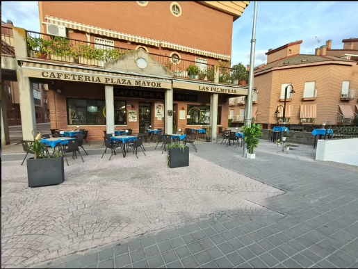
Cafetería · Bar · Ciempozuelos
Pasa, siéntate y relájate. Del resto nos encargamos nosotros.
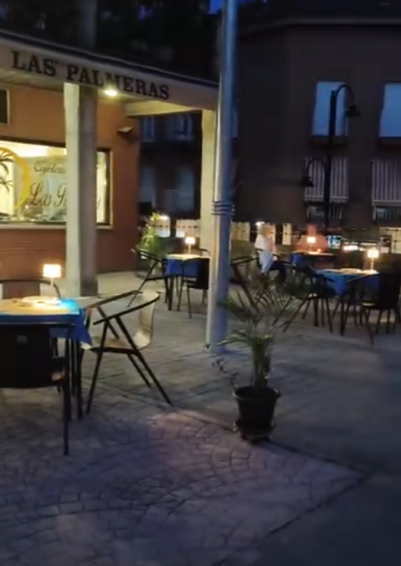
Bienvenidos
En Las Palmeras nos gusta que te sientas como en casa desde el primer café. Somos una cafetería y bar de barrio, en plena Plaza Mayor de Ciempozuelos, donde cada cliente se conoce por su nombre y cada mesa tiene su historia.
Nuestro trato es cercano, excelente y familiar, como entre amigos. Y en la cocina encontrarás de todo: desayunos con mollete recién tostado, tostas y ensaladas gourmet, raciones para compartir, hamburguesas jugosas y una buena selección de cafés y bebidas.
Te esperamos con los brazos abiertos.
Un ambiente tranquilo y cálido, dentro y en nuestra terraza a la sombra de la plaza.
Atención cercana y de confianza. Aquí nadie es un cliente más: eres uno de los nuestros.
Del café con tostada al tataki de atún rojo. Comida variada, bebidas y mucho cariño en cada plato.
De nuestra cocina
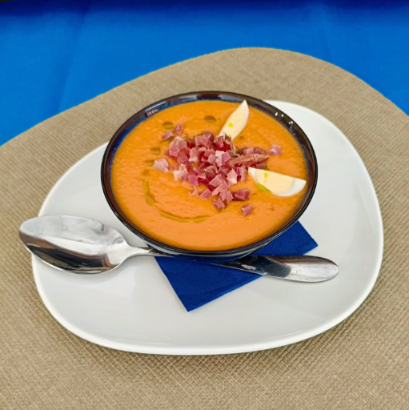
Salmorejo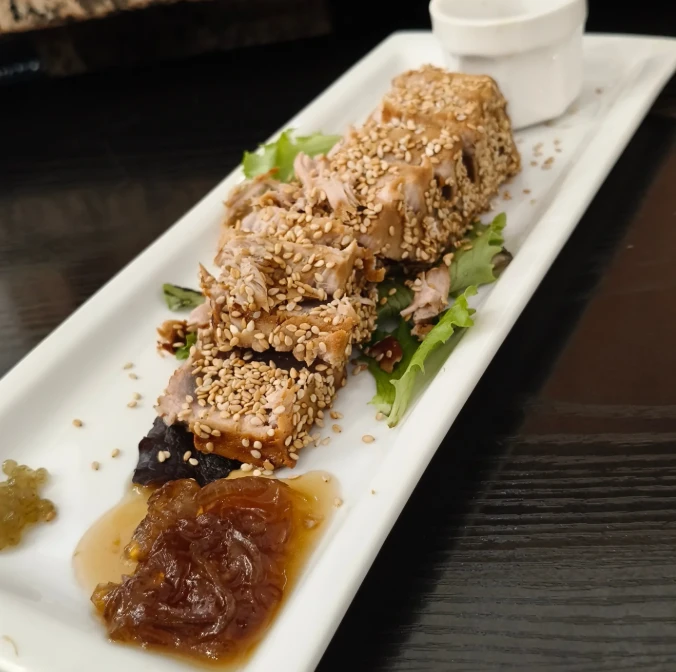
Tataki de atún rojo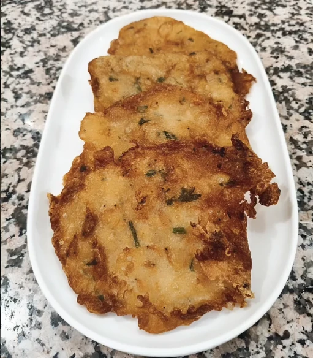
Tortillitas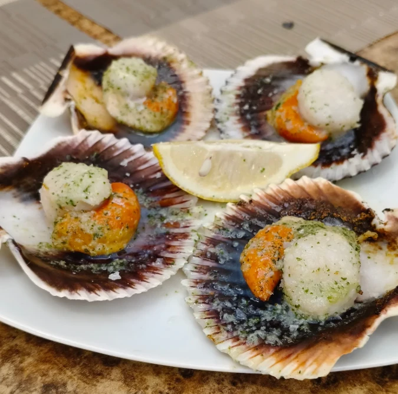
Zamburiñas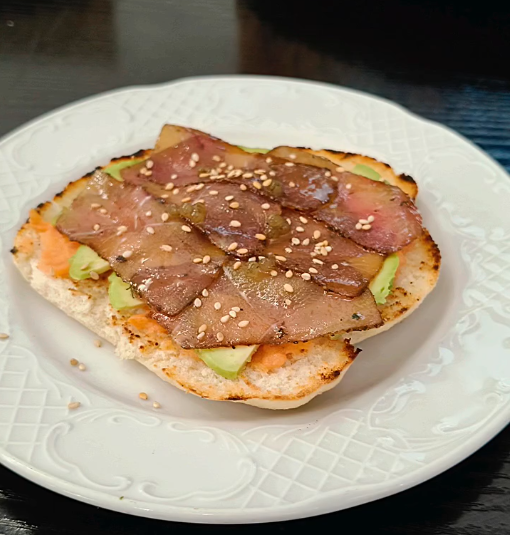
Tostas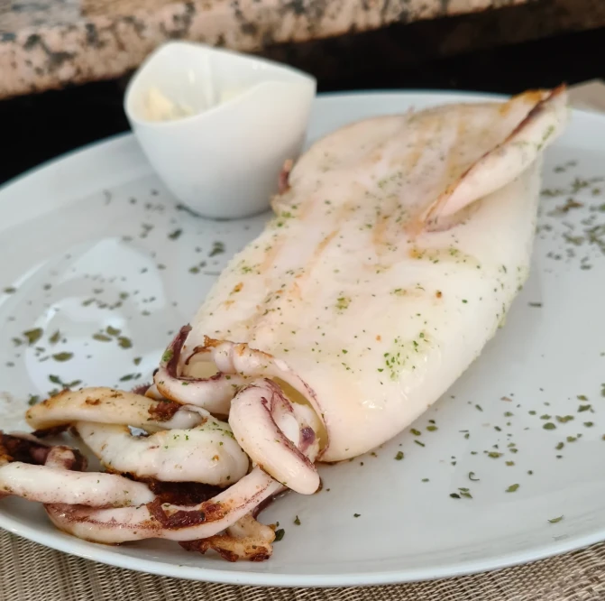
Calamar a la plancha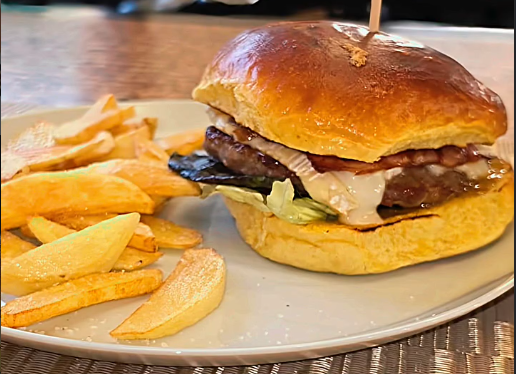
Hamburguesas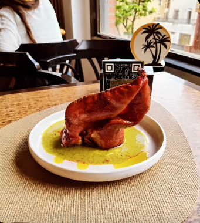
Oreja confitada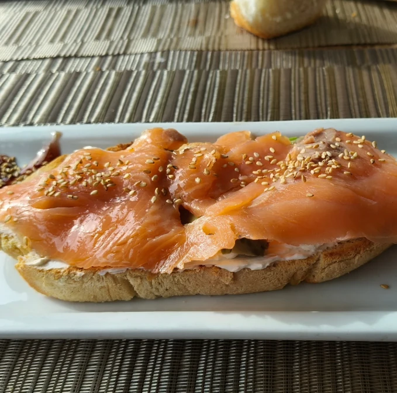
Tosta de salmón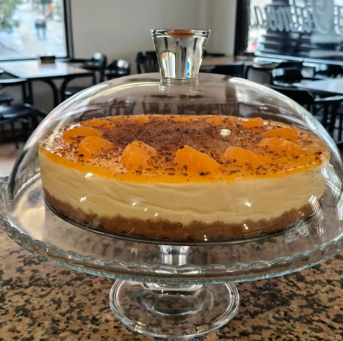
Tarta de la semanaHorario
Del primer café de la mañana a la última caña de la noche.